Tokyo, Mt. Fuji & Hakone (Wed Nov 25 – Wed Dec 2, 2026)
Jet-lag staircase for Chicago travelers: unhurried mornings, weekday mountains & coasters, protected afternoon recharge breaks, and confirmed cultural bookings.
2 Adults · Strictly No Pork & No Alcohol
All Currently Open Activities & Hotels Booked ✅
Protected 2–4 PM Recharge Daily
📊 8-Day Trip at a Glance
| Day | Scheduled Flow & Confirmed Bookings |
|---|---|
|
Wed Nov 25
Arrival · Shibuya
|
Land Haneda (17:45) → ✅ Booked JR-East Hotel Mets Shibuya → 1F 7-Eleven & Shibuya Stream Snack Run |
|
Thu Nov 26
Mt. Takao & Shinjuku
|
Mt. Takao Cable Car (08:45) → Trail 1 Summit & Trail 4 Suspension Bridge → Summit Soba → Yakuo-in Temple → Hotel Nap → Omoide Yokocho Lanterns & Shinjuku Lights |
|
Fri Nov 27
Mt. Fuji & Fuji-Q
|
✅ Booked 08:15 Coach → Lake Kawaguchiko & Mt. Fuji Panoramic Ropeway → Lakeside Hoto Lunch → Fuji-Q Launch Coasters (Zokkon & Takabisha) → ✅ Booked 16:18 Coach → Friday Night Dinner |
|
Sat Nov 28
Harajuku & Shibuya
|
Meiji Jingu Forest Shrine (09:30) → Takeshita Street Crepes → Omotesando & Cat Street Walk → Hotel Nap → SHIBUYA SKY Sunset (15:30) → Shibuya Crossing → Ebisu Chicken Ramen |
|
Sun Nov 29
Asakusa, Akihabara & Sumo
|
✅ Booked 12:00 Sushi-Making Class → ✅ Booked 13:30 Maikoya Kimono + Matcha Tea Ceremony → 15:00 Senso-ji & Nakamise Stroll → 16:00 Car-Free Akihabara → ✅ Booked 17:30 Live Sumo Show |
|
Mon Nov 30
Hakone Loop & Mizunoto
|
Check Out JR Mets & Handoff Bags to lyf Shibuya → 10:00 Odakyu Romancecar → Hakone Ropeway & Owakudani → Lake Ashi Ship → Old Tokaido Cedar Trail → ✅ Booked 16:00 Mizunoto Ryokan (Private Hinoki Balcony Bath) |
|
Tue Dec 1
Bullet Train, Samurai & Karts
|
Morning Balcony Onsen → 11:30 Shinkansen Bullet Train → 12:10 Tokyo Station Ramen Street → ✅ Booked 13:30 Samurai & Ninja Museum → ✅ Booked 15:00 lyf Shibuya Check-In → ✅ Booked 17:00 Night Street Go-Karts → Unagi & Holiday Lights |
|
Wed Dec 2
Shinjuku Gyoen & Departure
|
Check Out lyf Shibuya → 09:15 Shinjuku Gyoen Autumn Maples → 10:40 Isetan Depachika Food Hall → 12:15 Train/Bus to Haneda (16:50 Flight) |
🗓️ Day-by-Day Photos & Timed Schedule
Wed Nov 25
Arrival in Tokyo & Check-In at JR-East Hotel Mets Shibuya
📍 Haneda Airport → Shibuya (JR-East Hotel Mets Shibuya)
Land at Haneda Airport, take the 35-minute train ride straight to Shibuya New South Gate, check into JR-East Hotel Mets Shibuya, and grab late-night snacks downstairs before getting a full night's sleep.
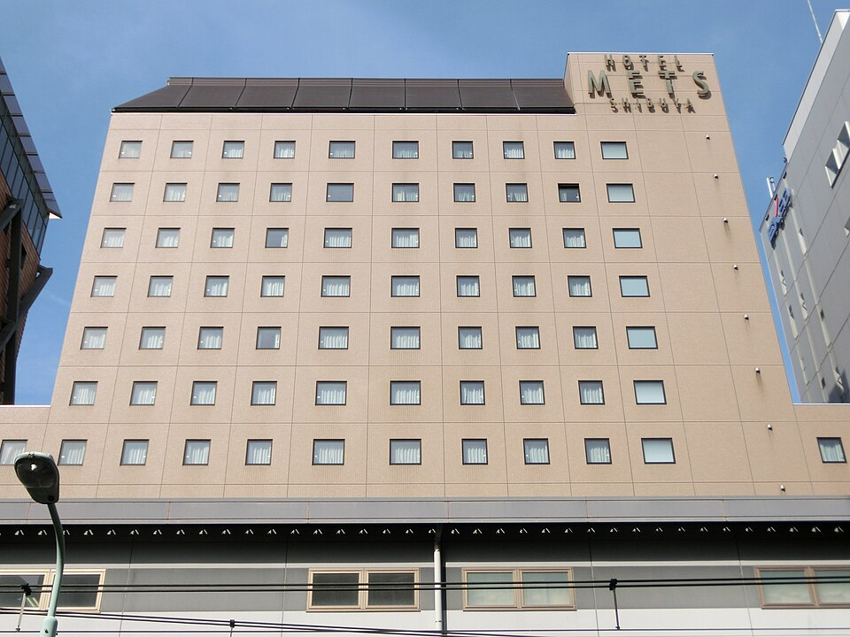
JR-East Hotel Mets Shibuya
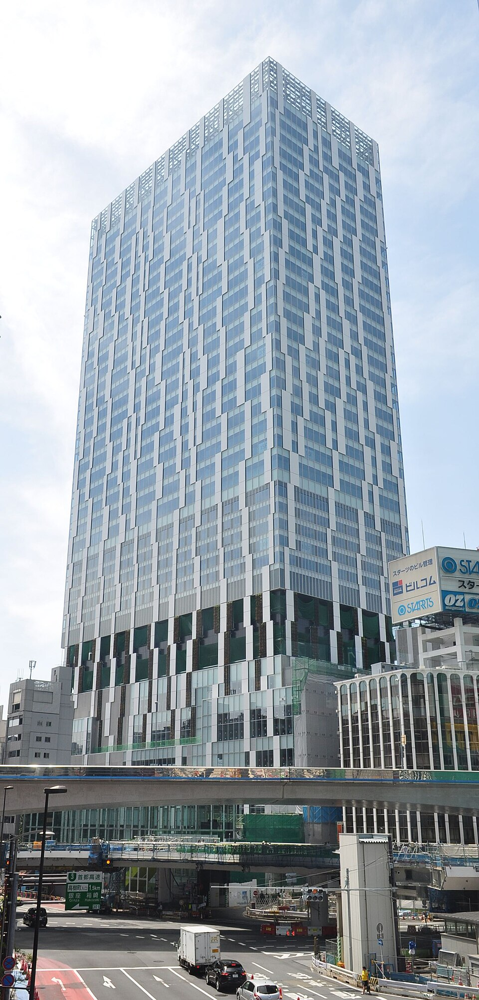
Shibuya Stream Riverwalk
Timed Schedule
-
17:45 Land at Haneda Airport (Terminal 3) ☀️ DaytimeClear immigration and customs using your Visit Japan Web QR codes (takes about 60–75 minutes) and withdraw ¥15,000 in cash at a 7-Eleven ATM in the arrival lobby.📋 Required: Pre-trip prep only (no separate ticket): Have your physical passports and Visit Japan Web QR codes ready, and load ¥10,000 (~$65) onto Suica in Apple Wallet on each person's iPhone before landing.
-
19:30 ✅ Booked Check-In: JR-East Hotel Mets Shibuya (Nights 1–5) ☕ Dedicated RestTake the Keikyu Airport Line to Shinagawa Station (14 minutes), transfer to the JR Yamanote Line to Shibuya New South Gate (13 minutes), and walk 4 minutes to the hotel.📋 Required: ✅ Hotel is booked on Priceline. The airport train requires no advance booking—simply tap your Suica card at the gate (¥670) and present both physical passports at the 3rd-floor front desk to check in.
-
20:45 Downstairs 7-Eleven & Shibuya Stream Riverwalk Snack Run 🏮 Sunset & NightStock your room fridge at the 1st-floor 7-Eleven (salmon or tuna rice balls, egg-salad sandwiches, and fruit) or grab a warm meal 2 minutes away along the Shibuya Stream riverwalk.📋 Required: Nothing (walk right in and pay with Suica, Apple Pay, credit card, or cash).
Thu Nov 26
Mt. Takao Autumn Hike, Afternoon Nap & Omoide Yokocho Lanterns
📍 West Corridor: Shibuya / Shinjuku ↔ Mt. Takao
Use your natural Day-2 early wake-up to ride the 08:45 Mt. Takao Cable Car without crowds, hike through crimson autumn maples, take a recharging nap back at your hotel across the 2:30 PM jet-lag dip, and explore Shinjuku's glowing lantern alleys at sunset.
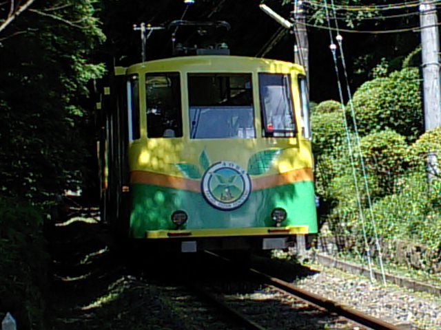
Mt. Takao Cable Car
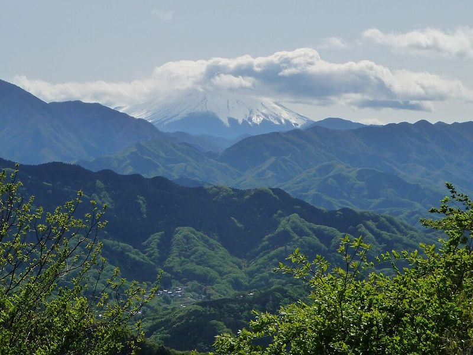
Mt. Fuji from Mt. Takao
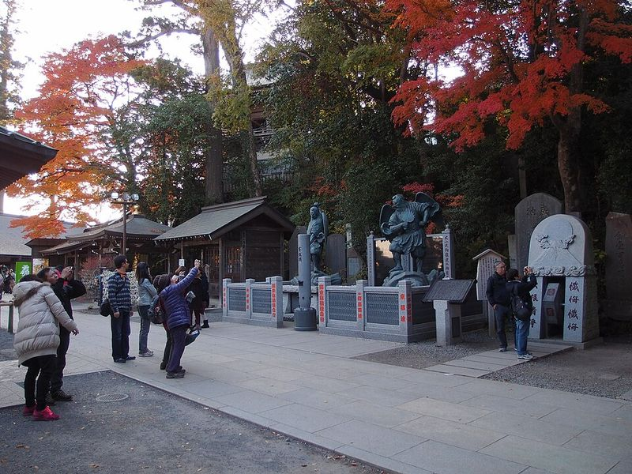
Mt. Takao Autumn Maples
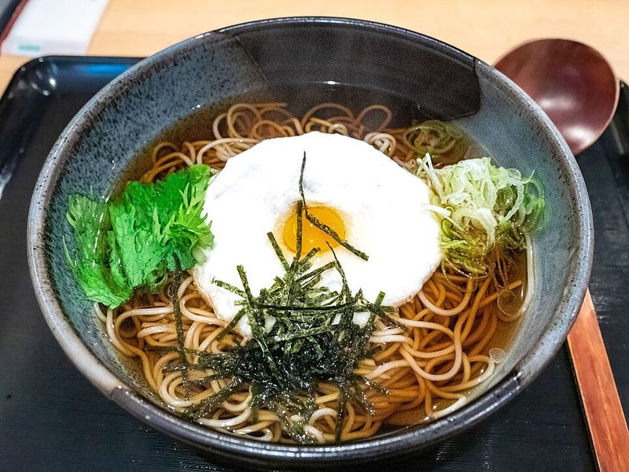
Summit Buckwheat Soba
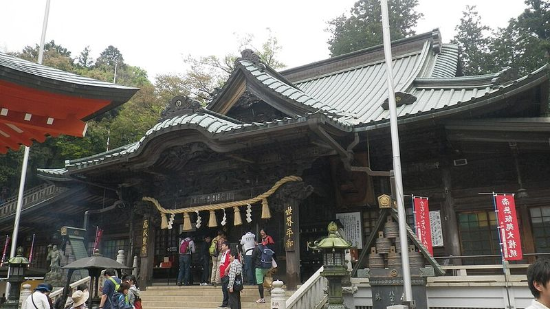
Yakuo-in Mountain Temple
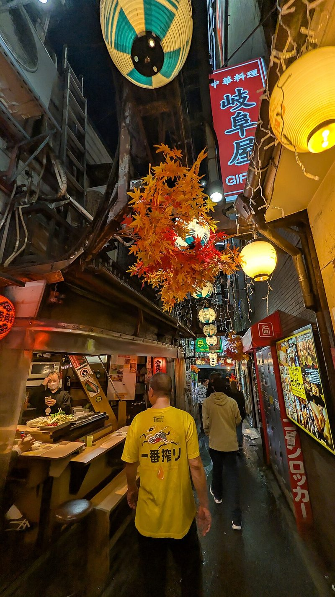
Omoide Yokocho Lantern Alley
Timed Schedule
-
05:30–07:35 🌅 Natural 05:30 Wake-Up + Unhurried Morning Routine & Breakfast ☀️ DaytimeGrab free espresso in the 3rd-floor lobby or breakfast at the 1st-floor Tully's Coffee, spend 20 minutes outside in natural morning daylight without sunglasses, and ride the Yamanote Line 7 minutes to Shinjuku.📋 Required: Nothing (just tap your Suica card for the ¥170 train ride to Shinjuku).
-
07:45–08:35 Keio Line Express Train: Shinjuku → Takaosanguchi (50 min seated) ☀️ DaytimeBoard the direct Keio Line train from Keio Shinjuku Station straight to Takaosanguchi Station at the base of the mountain.📋 Required: Nothing to book in advance. This is a regular commuter train that departs every 20 minutes—just tap your Suica card (¥430) at the Keio Shinjuku gate.
-
08:45–10:45 Mt. Takao Cable Car Up + Trail 1 Summit & Trail 4 Suspension Bridge ☀️ DaytimeRide Japan's steepest funicular cable car halfway up the mountain, walk the scenic forest ridge to the 599-meter summit viewpoint overlooking Mt. Fuji, and cross the Trail 4 suspension bridge.📋 Required: Nothing to book in advance. The Mt. Takao Cable Car does not take reservations—just tap your Suica card or buy a ¥950 round-trip ticket at the base station machine (departs every 15 minutes starting at 08:00). The national park and hiking trails are 100% free with no permit needed.
-
10:45–11:45 🍜 60-Min Summit Sit-Down Lunch: Hot Tororo Soba & Miso Dango ☕ Dedicated RestBeat the noon lunch crowd at a summit teahouse with hot buckwheat soba noodles in soy-bonito broth (naturally pork-free) and charcoal-grilled sweet miso rice dumplings.📋 Required: Nothing to book (summit teahouses are walk-in only; bring about ¥2,000 in cash per person since some mountain stalls are cash-only, and show your No-Pork Chef Card).
-
11:45–13:00 Yakuo-in Mountain Temple, Cable Car Down & Train Back to Shibuya ☀️ DaytimeWalk through the historic cliffside grounds of Yakuo-in Temple on your way back from the summit, ride the Cable Car down to save your knees, and take the Keio train back to Shibuya by 13:00.📋 Required: Nothing (Yakuo-in Temple is 100% free and open-air; use the return half of your Cable Car ticket down and tap Suica for the ¥430 train ride back).
-
13:15–16:00 🛌 2 Hr 45 Min Hotel Recharge & Power Nap (Beats the '2:30 PM Wall') ☕ Dedicated RestBecause 2:30 PM in Tokyo feels like 11:30 PM Chicago bedtime, head back to JR Mets Shibuya for a 30–45 minute power nap (set an alarm!) and freshen up before sunset.📋 Required: Nothing.
-
16:15–19:00 Omoide Yokocho Lantern Alley, 3D Giant Cat & Shinjuku Southern Terrace Lights 🏮 Sunset & NightWalk through Omoide Yokocho right as the red lanterns turn on at 16:15 sunset, spot the 3D Giant Cat billboard and Godzilla head in Kabukicho, and have dinner along the illuminated Shinjuku Southern Terrace promenade.📋 Required: Nothing (all lantern alleys, billboards, and winter light promenades are free public streets, and dinner spots are walk-in).
Fri Nov 27
Mt. Fuji Panoramic Ropeway, Lake Kawaguchiko & Fuji-Q Coasters
📍 Mt. Fuji Corridor: Lake Kawaguchiko & Fuji-Q Highland
Ride your booked 08:15 highway coach to Lake Kawaguchiko for the Mt. Fuji Panoramic Ropeway, lakeside Hoto noodles, and Fuji-Q Highland's launch coasters—then sleep on your booked 16:18 coach back to Shinjuku.
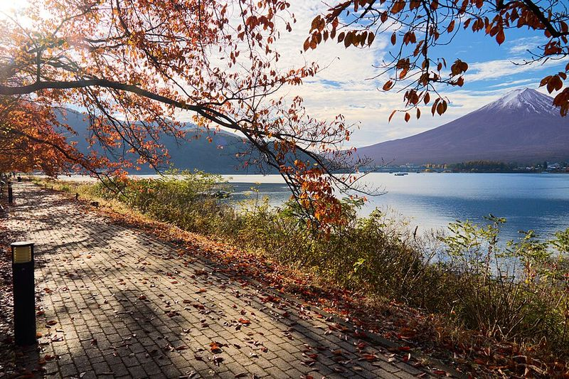
Mt. Fuji & Lake Kawaguchiko
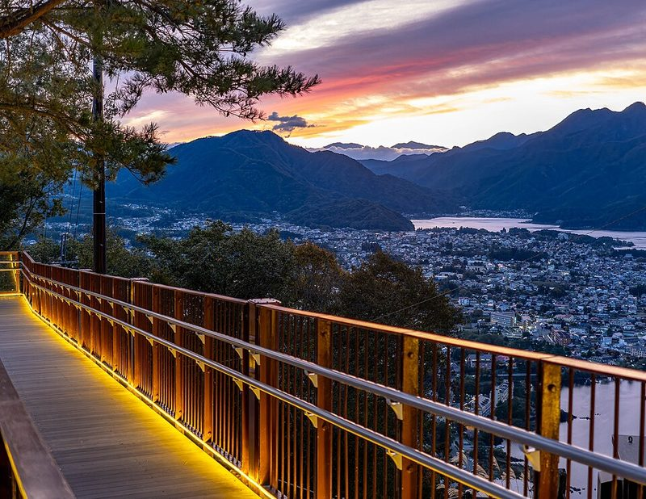
Mt. Fuji Panoramic Ropeway
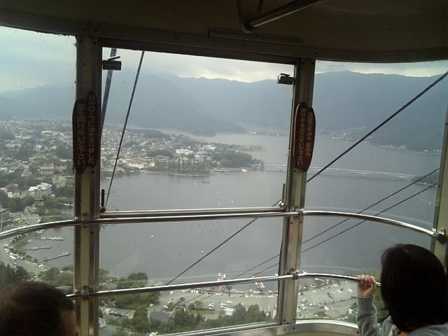
Lake View from the Gondola
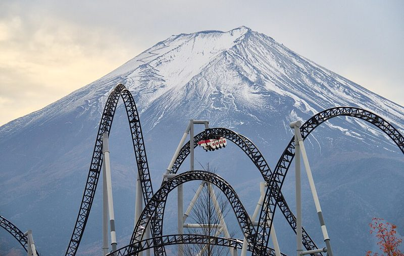
Fuji-Q Highland & Mt. Fuji
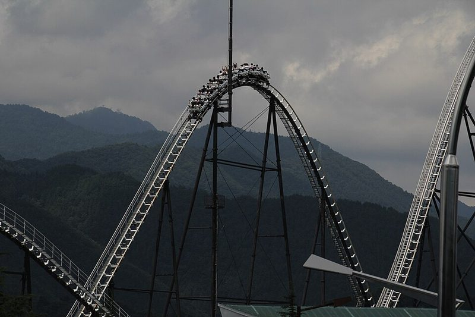
Fuji-Q Launch Coaster
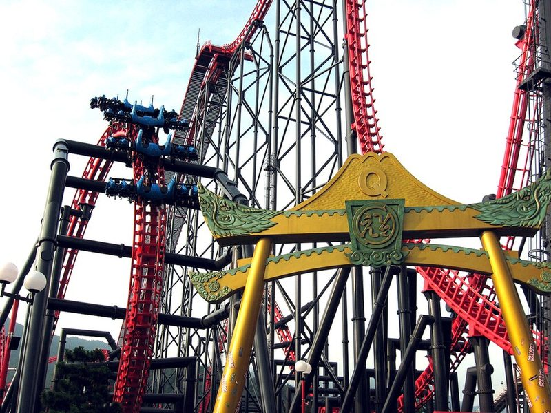
Fuji-Q Roller Coasters
Timed Schedule
-
06:15–08:00 🌅 Natural 06:15 Wake-Up + Breakfast & Short Ride to Busta Shinjuku ☀️ DaytimeHave breakfast at JR Mets Shibuya, take the 7-minute Yamanote Line train to Shinjuku South Exit, and take the elevator up to the 4th-floor Busta Shinjuku bus terminal by 08:05.📋 Required: Nothing (tap your Suica card for the ¥170 train ride from Shibuya to Shinjuku).
-
08:15–10:00 ✅ Booked: Highway Coach 1151 (Busta Shinjuku 08:15 → Kawaguchiko 10:00) ☕ Dedicated RestYour reserved one-way highway bus seats are confirmed on highwaybus.com (Line 110, Bus 1151).📋 Required: ✅ Already Booked (highwaybus.com, Bus 1151). Just pull up your mobile Web Ticket on your phone when boarding at Busta Shinjuku (4th floor).
-
10:15–11:45 Mt. Fuji Panoramic Ropeway (Mt. Tenjo 1,075m Summit Deck) ☀️ DaytimeTake the 3-minute gondola ride up to the Mt. Tenjo observation deck and summit teahouse for an unobstructed view of snow-capped Mt. Fuji across Lake Kawaguchiko.📋 Required: Nothing to book in advance (the ropeway does not sell timed reservations). Buy your ¥1,200 per adult round-trip gondola ticket on-site at the base station machine or window using Suica, card, or cash. The lakeside promenade and summit deck are free.
-
11:45–13:00 🍜 75-Min Lakeside Hoto Noodle Lunch & 3-Min Train to Fuji-Q ☕ Dedicated RestWarm up with Lake Kawaguchiko's signature dish—thick Hoto flat noodles simmered in savory pumpkin miso broth (order vegetarian or seafood with no pork)—then take the local train 1 stop (3 minutes) to Fuji-Q Highland.📋 Required: Nothing to book in advance (walk into a lakeside Hoto restaurant, show your No-Pork Chef Card, and tap Suica for the ¥180 one-stop train ride to Fujikyu-Highland Station).
-
13:00–16:00 Fuji-Q Highland Launch Coasters (Zokkon & Takabisha + 14:15 Cafe Break) ☀️ DaytimeRide Zokkon (Fuji-Q's flagship motorbike launch coaster) and Takabisha with Mt. Fuji right behind the tracks, pausing at 14:15 for a 45-minute warm crepe and coffee break.📋 Required: 🎟️ 3-Part Ticket Setup: (1) Park entry is free—just pick up a free QR entry pass at the gate kiosk; (2) Buy individual coaster ride tickets (¥2,000 per coaster) at the red ticket machines inside the park, or an Afternoon Pass after 1:00 PM if riding 3+ attractions; (3) ⏳ Advance Booking: Skip-the-line Priority Passes open Tuesday, Nov 24 at 3:00 AM Chicago time (3 days out) on fujiq.jp.
-
16:18–17:55 🚌 ✅ Booked: Highway Coach 1118 Nap Back to Shinjuku (16:18 → 17:55) ☕ Dedicated RestYour reserved return highway coach is confirmed on highwaybus.com (Line 110, Bus 1118) departing right outside the Fuji-Q Highland park gate.📋 Required: ✅ Already Booked (highwaybus.com, Bus 1118). Show your mobile Web Ticket on your phone at the Fuji-Q Highland Highway Bus Stop by 16:08.
-
18:45 'Hana-kin' (Flower Friday) Wagyu & Sushi Night in Shibuya or Shinjuku 🏮 Sunset & NightDrop off your heavy mountain jacket at JR Mets Shibuya and head out for sizzling wagyu beef teppanyaki, sushi, or crispy chicken karaage.📋 Required: Nothing (walk-in dinner; show your No-Pork Chef Card when ordering).
Sat Nov 28
Meiji Jingu, Harajuku & Omotesando, Hotel Nap, Sunset SHIBUYA SKY & Ebisu
📍 Harajuku → Omotesando & Cat Street → Shibuya → Ebisu
Walk through Meiji Jingu's forest shrine at 09:30, graze Takeshita Street crepes and stroll Omotesando and Cat Street at your own pace, take a 90-minute afternoon recharge break at your hotel, and catch the 16:28 sunset from the 47-story SHIBUYA SKY rooftop.
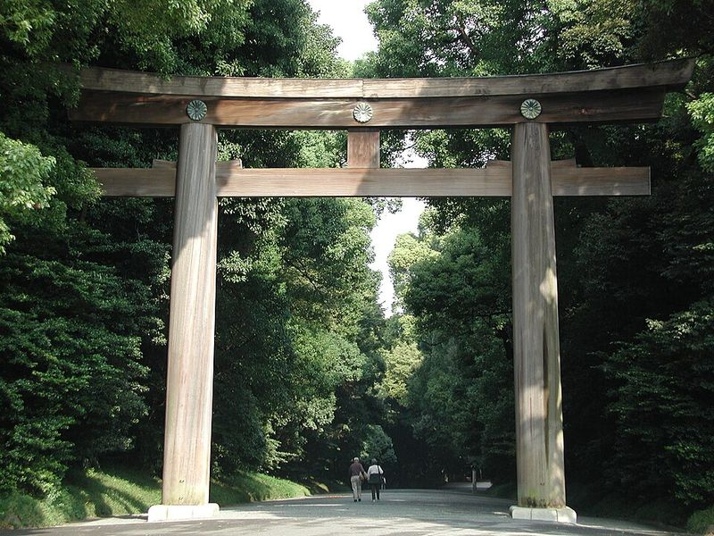
Meiji Jingu Forest Torii
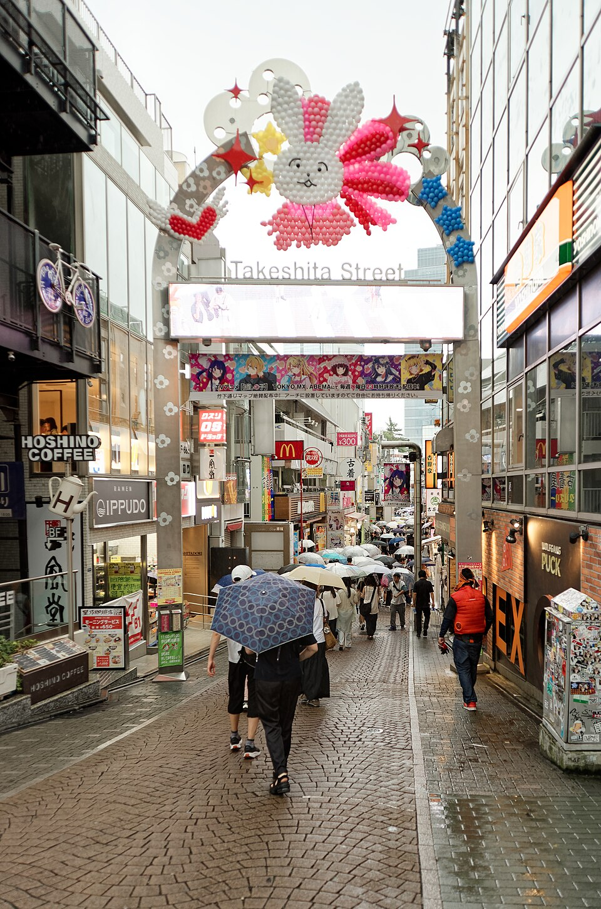
Takeshita Street Harajuku
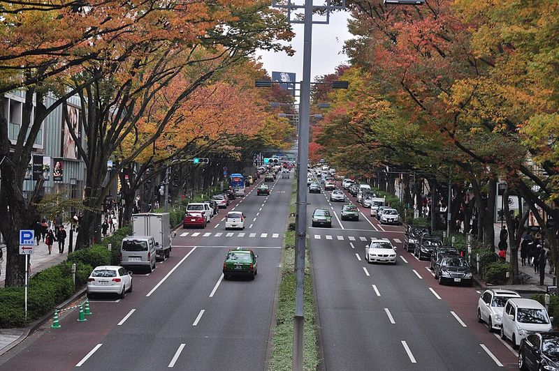
Omotesando Boulevard

Cat Street Harajuku
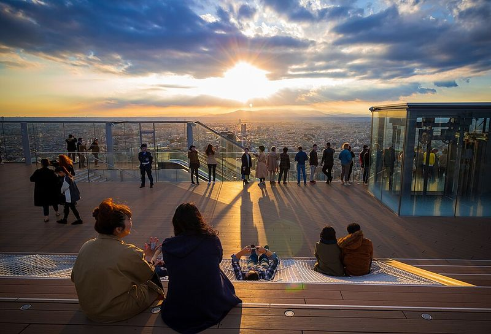
SHIBUYA SKY Rooftop
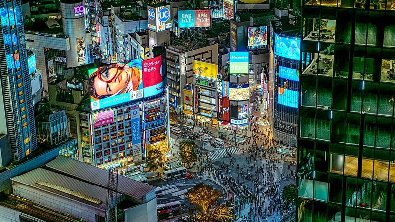
Shibuya Scramble Crossing
Timed Schedule
-
07:15–09:15 🌅 Natural 07:15 Wake-Up + Relaxed Breakfast & 2-Min Ride to Harajuku ☀️ DaytimeEnjoy an unhurried morning at JR Mets Shibuya, then take the Yamanote Line 1 stop (2 minutes) to Harajuku Station.📋 Required: Nothing (tap your Suica card for the ¥150 one-stop train ride to Harajuku).
-
09:30–10:45 Meiji Jingu Forest Shrine (Shrine #1 of 2) ☀️ DaytimeWalk the peaceful gravel paths under giant cedar torii gates inside a 170-acre forest—Saturday morning is also the best time to spot traditional Shinto wedding processions in the courtyard.📋 Required: Nothing (100% free admission with no ticket or reservation required).
-
10:45–12:15 🥞 90-Min Brunch & Cafe Break: Takeshita Street Crepes & Omotesando ☕ Dedicated RestWalk down colorful Takeshita Street right as the shops open at 10:45 for warm strawberry-custard crepes, then sit down for fluffy soufflé pancakes or brunch along tree-lined Omotesando Boulevard.📋 Required: Nothing (free pedestrian street and walk-in crepe stands and cafes; pay with Suica, card, or cash).
-
12:15–13:30 Cat Street & Omotesando Pedestrian Walk Back to Shibuya ☀️ DaytimeBecause your Matcha Tea Ceremony is included in Sunday's Asakusa kimono experience, you have a completely unhurried midday window to browse the indie boutiques and coffee roasters along pedestrian-only Cat Street back into Shibuya.📋 Required: Nothing (100% free outdoor pedestrian street).
-
13:45–15:15 🛌 90-Min Hotel Recharge Break at JR-East Hotel Mets Shibuya ☕ Dedicated RestRest your feet and take a 30–45 minute power nap in your hotel room before walking 8.5 minutes across the Shibuya Stream skydeck to SHIBUYA SKY.📋 Required: Nothing.
-
15:30–17:00 SHIBUYA SKY 47-Story Open-Air Rooftop at Sunset (16:28) 🏮 Sunset & NightStep out onto the 360-degree open-air rooftop deck to watch golden hour, the silhouette of Mt. Fuji, and the Tokyo skyline lighting up at dusk.📋 Required: ⏳ Advance Booking Required: Tickets open Friday, Nov 13 at 9:00 AM Chicago time (14 days out) on SHIBUYA SKY Official or Klook—book the 15:30–16:00 entry slot (~¥2,500 per adult). Also bring a ¥100 coin for the mandatory refundable locker on the 46th floor, where bags, hats, and tripods must be stored before stepping onto the roof.
-
17:15–19:30 Shibuya Scramble Crossing Neon Walk + Ebisu Tori-Paitan Chicken Ramen 🏮 Sunset & NightWalk across iconic Shibuya Scramble Crossing under the giant neon video screens, then take the Yamanote Line 1 stop (2 minutes) to Ebisu for rich, creamy chicken-broth ramen (tori-paitan) and crispy chicken gyoza.📋 Required: Nothing (Shibuya Scramble Crossing is a free public intersection, and Ebisu ramen shops are walk-in; tap Suica ¥150 for the 1-stop train).
Sun Nov 29
Booked Sushi Class, Booked Kimono & Tea Ceremony, Senso-ji, Akihabara & Sumo
📍 East-to-West: Asakusa (12:00 Sushi + 13:30 Kimono & Tea) → Car-Free Akihabara → Shinjuku (17:30 Sumo)
Sleep in until 08:30–09:00, then enjoy all three of your confirmed Sunday cultural bookings in a smooth East-to-West line: your 12:00 PM Sushi Class, your 1:30 PM Maikoya Kimono & Tea Ceremony followed by a Senso-ji stroll, Car-Free Akihabara at 4:00 PM, and your 5:30 PM Live Sumo Show in Shinjuku.
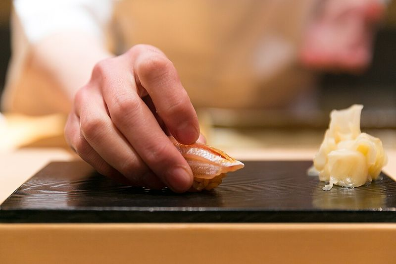
12:00 Sushi-Making Class
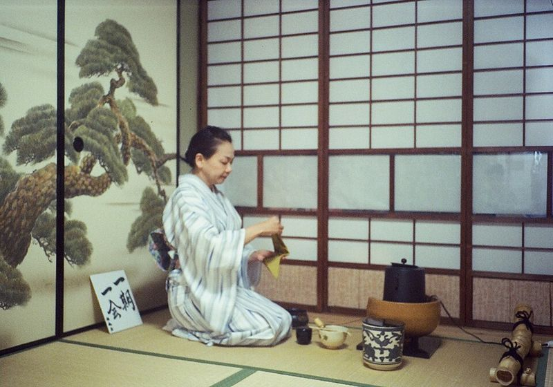
13:30 Kimono & Tea Ceremony
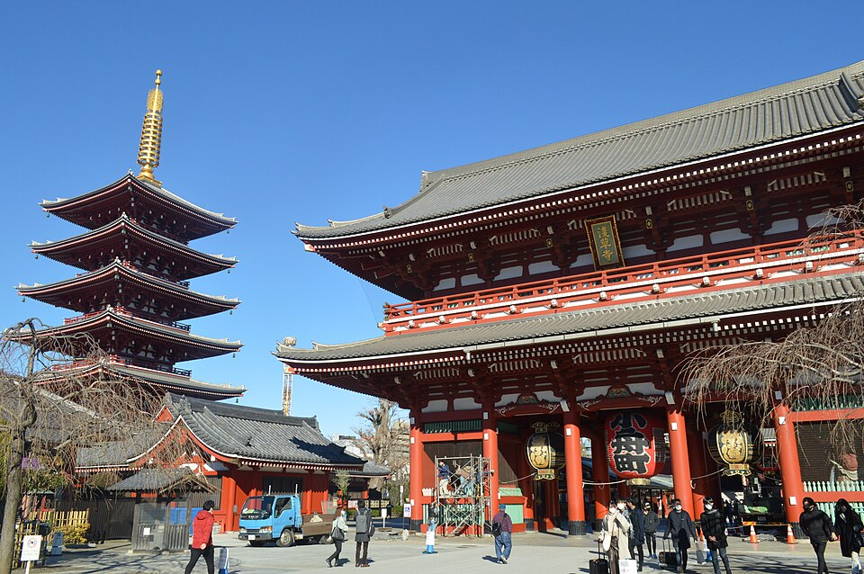
Senso-ji Temple (Asakusa)
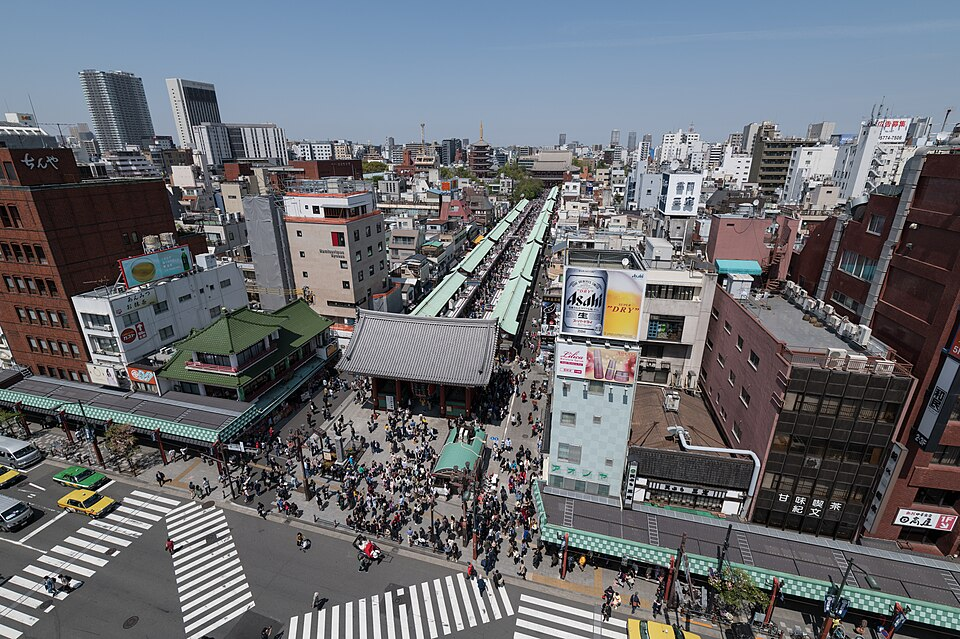
Nakamise Street Stalls
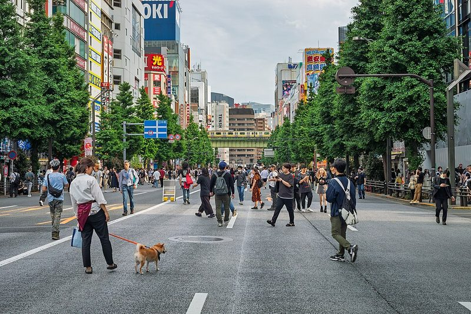
Akihabara Car-Free Sunday
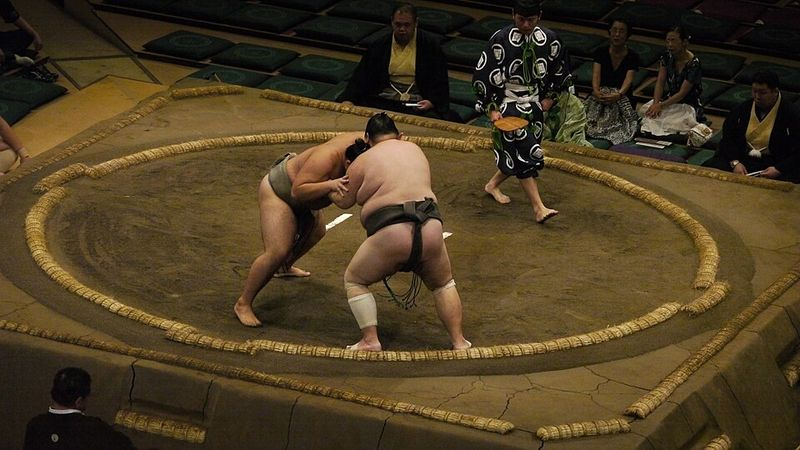
17:30 Live Sumo Show
Timed Schedule
-
08:30–11:15 🌅 Natural 08:30–09:00 Wake-Up + Light Coffee & Direct Subway to Asakusa ☀️ DaytimeKeep breakfast light so you have an appetite for your 12:00 PM sushi class! Ride the Tokyo Metro Ginza Line straight from Shibuya to Asakusa (29 minutes with zero transfers).📋 Required: Nothing to book (tap your Suica card for the ¥250 subway ride from Shibuya to Asakusa).
-
12:00–13:20 ✅ Booked: Hands-On Sushi-Making Class in Asakusa (12:00 PM) ☀️ DaytimeLearn to shape nigiri and sushi rolls alongside a friendly local chef and eat your creations for lunch (100% pork-free and alcohol-free).📋 Required: ✅ Already Booked on Viator (Booking 217172P1 for 12:00 PM). Simply show your mobile Viator voucher when you arrive at 11:50 AM.
-
13:30–15:00 👘🍵 ✅ Booked: Maikoya Asakusa Silk Kimono + Matcha Tea Ceremony (1:30 PM, $105) ☕ Dedicated RestFemale staff dress you in silk kimonos inside a women-only dressing area over your base layers (hijab stays completely undisturbed, 13:30–14:00), followed by a 60-minute seated English Matcha Tea Ceremony with traditional wagashi sweets in a tatami room (14:00–15:00).📋 Required: ✅ Already Booked on Viator (Booking 51440P108 for 1:30 PM, $105). Show your mobile Viator voucher at Maikoya Asakusa (1-12-2 Asakusa). Prep tip: wear a thin fitted long-sleeve top and leggings so they can wrap the kimono cleanly over your clothes.
-
15:00–15:45 Outdoor Kimono Stroll: Senso-ji Temple (Temple #2 of 2) & Nakamise Street ☀️ DaytimeKeep your kimonos on after tea to stroll historic Nakamise-dori for warm melon bread (melonpan) and freshly toasted rice crackers, take photos at 645 AD Senso-ji Temple and the giant red Kaminarimon lantern, and return your kimonos to Maikoya by 15:45.📋 Required: Nothing (Senso-ji Temple, Kaminarimon Gate, and Nakamise Street are 100% free and open 24/7; bring a few coins or ¥1,000 bills for street snacks, and return your kimonos to Maikoya by 15:45).
-
16:00–16:50 Akihabara Sunday-Only 'Hokoten' Car-Free Boulevard at Sunset 🏮 Sunset & NightEvery Sunday afternoon until 17:00, Akihabara closes its 6-lane main avenue (Chuo-dori) to traffic—walk right down the middle of the street as the neon anime and electronics towers light up at dusk, then ride the JR Chuo-Sobu Line 18 minutes to Shinjuku.📋 Required: Nothing (the Sunday pedestrian boulevard is 100% free; just tap your Suica card for the short train rides to Akihabara and onward to Shinjuku).
-
17:30–19:15 ✅ Booked: Seated Live Sumo Show & Chicken Hot-Pot Dinner (5:30 PM, Shinjuku) 🏮 Sunset & NightWatch live sumo demonstrations and matches between former professional wrestlers, learn the rules in English, take a photo in the ring, and eat a warm chicken chanko-nabe hot-pot dinner.📋 Required: ✅ Already Booked on Viator (Booking 5610033P1 for 5:30 PM). Show your mobile Viator voucher at the Shinjuku venue door at 17:15.
-
19:30 Onward Optional Evening Dessert Stroll & Pack Your 1-Night Backpack for Hakone 🏮 Sunset & NightFinishing dinner by 19:15 gives you a relaxed Sunday evening to grab dessert near Shibuya Stream and pack a light overnight backpack for Monday's trip to Hakone.📋 Required: Quick prep at your hotel: Pack 1 night of clothes and toiletries into a small backpack for Hakone so you can leave your two large suitcases behind in Shibuya tomorrow morning.
Mon Nov 30
Hakone Volcanic Gondola, Lake Ashi Ship, Cedar Trail & Mizunoto Ryokan
📍 Shibuya Check-Out → Hakone Loop → Kowakidani Onsen (Mizunoto)
Check out of JR Mets Shibuya, drop your two large suitcases at lyf Shibuya while carrying only a light 1-night backpack, ride the 10:00 AM Romancecar into Hakone for the volcanic Ropeway, Lake Ashi pirate ship cruise, and Cedar Trail, and check into Mizunoto by 16:00 for a private Hinoki balcony hot-spring soak.
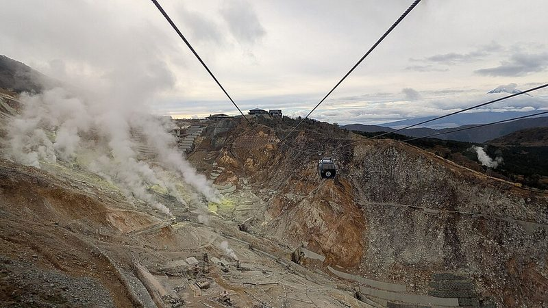
Hakone Ropeway Gondola
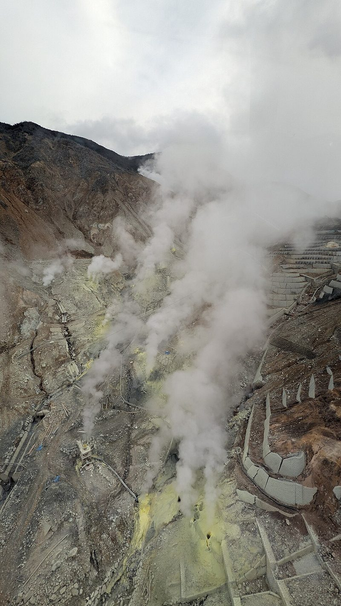
Owakudani Volcanic Valley
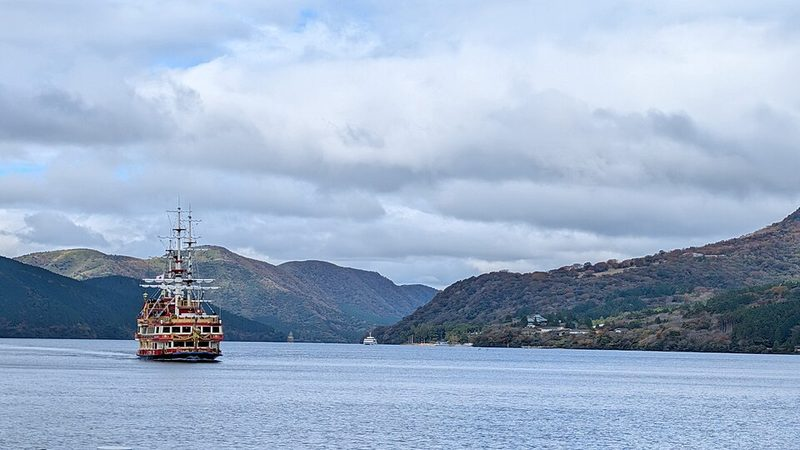
Lake Ashi Sightseeing Ship
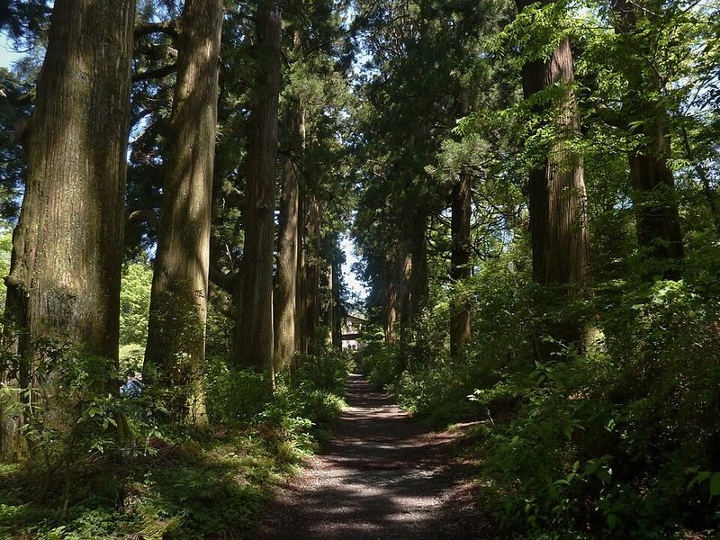
Old Tokaido Cedar Trail
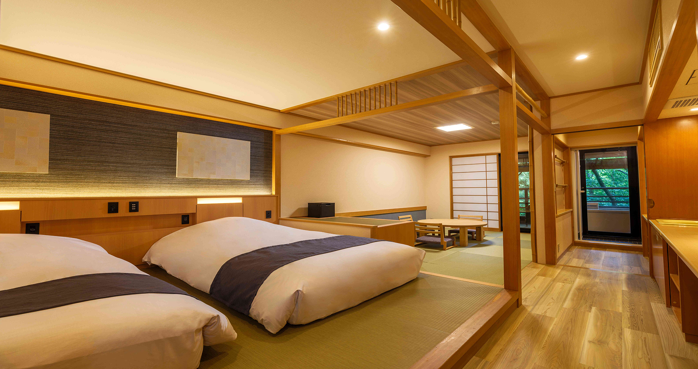
Mizunoto Suikanosho Room
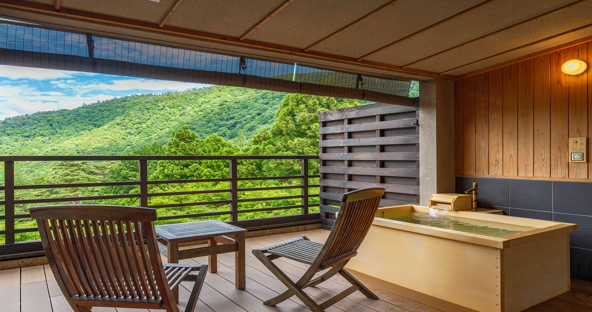
Mizunoto Hinoki Balcony Bath
Timed Schedule
-
08:15–09:40 🌅 Check Out of JR Mets Shibuya & Drop Suitcases at lyf Shibuya ☀️ DaytimeTake a 4-minute ($5) taxi from JR Mets to drop your two large suitcases at the 24-hour front desk of lyf Shibuya Tokyo (4-3 Udagawacho), or ship them from JR Mets' 3rd-floor Yamato desk (~$14 per bag). Then take the 7-minute train to Shinjuku with only your overnight backpack.📋 Required: No advance booking required. Just show your Dec 1 lyf Shibuya Priceline confirmation at lyf's 24-hour desk to store your suitcases for free, and tap Suica (¥170) for the train to Shinjuku.
-
10:00–11:25 Odakyu Romancecar Panoramic Express (Shinjuku → Hakone-Yumoto, 85 min) ☀️ DaytimeRelax in reserved panoramic seats on the direct express train from Shinjuku straight into the Hakone mountains.📋 Required: ⏳ Advance Booking Required: Opens Thursday, Oct 29 at 8:00 PM Chicago time (Oct 30 at 10:00 AM in Japan). Buy two items online: (1) Reserved Romancecar seats (¥1,200 per person) and (2) the 2-Day Hakone Freepass (¥6,100 per person on EMot Online, which covers all your Hakone trains, cable car, ropeway, pirate ship, and buses).
-
11:45–13:00 Hakone Ropeway Over Owakudani Volcanic Valley (+ 30-Min Summit Break) ☀️ DaytimeSoar 130 meters above steaming sulfur vents with sweeping views of Mt. Fuji, and stop at Owakudani summit station to try the famous black volcanic hot-spring eggs.📋 Required: No separate booking required—this ride is 100% covered by your 2-Day Hakone Freepass (just scan your Freepass QR code at the gate, and bring ¥500 cash at Owakudani if you want a bag of 5 volcanic eggs).
-
13:00–13:35 Lake Ashi Sightseeing Pirate Ship Cruise (Togendai → Moto-Hakone) ☀️ DaytimeEnjoy a 35-minute scenic cruise across volcanic Lake Ashi past the red lakeside torii gate of Hakone Shrine.📋 Required: No separate booking required—100% covered by your 2-Day Hakone Freepass (walk straight onto the ship by scanning your Freepass QR code).
-
13:35–14:30 ☕ 55-Min Lakeside Bakery & Soba Lunch at Moto-Hakone ☕ Dedicated RestSit down along the Lake Ashi waterfront at Bakery & Table Hakone or a lakeside soba noodle cafe before your afternoon forest walk.📋 Required: Nothing (walk-in lakeside cafes and bakeries; show your No-Pork Chef Card).
-
14:30–15:20 Old Tokaido Highway 400-Year Cedar Avenue Walk (45 min flat/gentle) ☀️ DaytimeWalk a peaceful, preserved stretch of the ancient stone highway between Edo and Kyoto, shaded by towering 400-year-old giant cedar trees.📋 Required: Nothing (100% free public forest trail with no ticket or permit required).
-
16:00 Onward ✅ Booked: Hakone Kowakudani Onsen Ryokan Mizunoto (Private Hinoki Balcony Bath) 🏮 Sunset & NightRide the H-Line Bus 18 minutes from Moto-Hakone Port to Kowakidani Station, then hop on the free 3-minute hotel shuttle. Soak anytime in your 35 m² Suikanosho room's golden Hinoki cypress tub on the balcony, try the 3 free outdoor maple-garden private hot-spring huts, and enjoy complimentary post-bath ice pops and 22:30 Yonaki Soba ramen.📋 Required: ✅ Already Booked on Priceline ($380 with tax). The H-Line bus is covered by your Hakone Freepass. Present both physical passports at check-in (there is a standard ¥150 per person local hot-spring tax paid at the desk, and the 3 outdoor private bath huts require no reservation—just flip the wooden sign on the door).
Tue Dec 1
33-Min Bullet Train, Ramen Street, Booked Samurai Museum, lyf Check-In & Night Karts
📍 Mizunoto → Odawara Bullet Train → Tokyo Station → Asakusa → Shibuya
Enjoy a morning Hinoki balcony hot-spring soak at Mizunoto, ride the 175-mph Shinkansen Bullet Train 33 minutes from Odawara to Tokyo Station for Ramen Street lunch, join your booked 1:30 PM Samurai & Ninja Museum tour in Asakusa, check into 4-star lyf Shibuya at 3:00 PM, and drive costumed night go-karts through Shibuya at 5:00 PM.
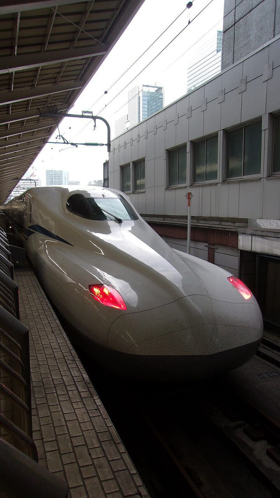
11:30 Shinkansen Bullet Train
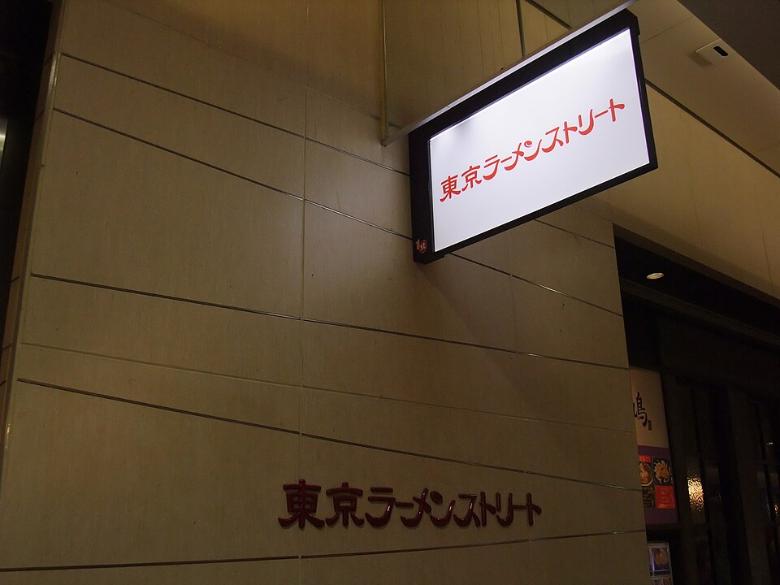
Tokyo Station Ramen Street
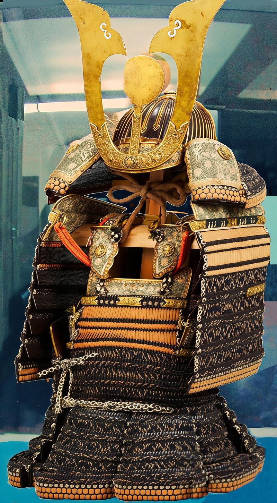
13:30 Samurai & Ninja Museum
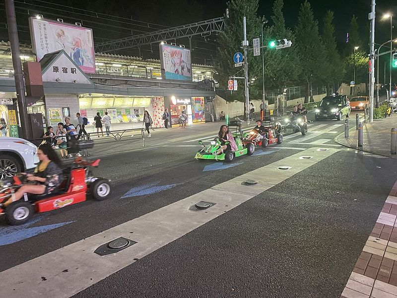
17:00 Night Street Go-Karts
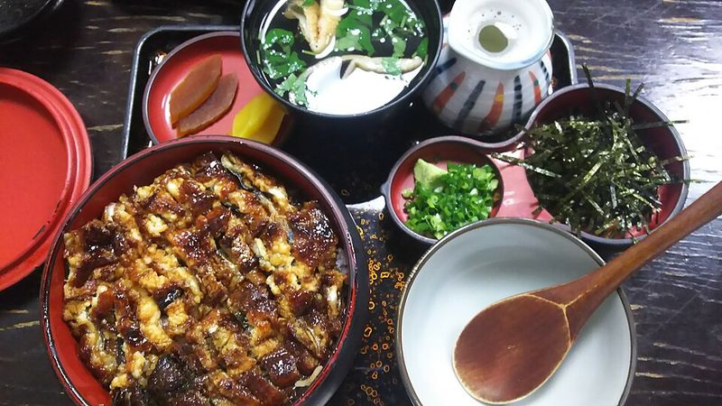
Charcoal-Grilled Unagi (Eel)
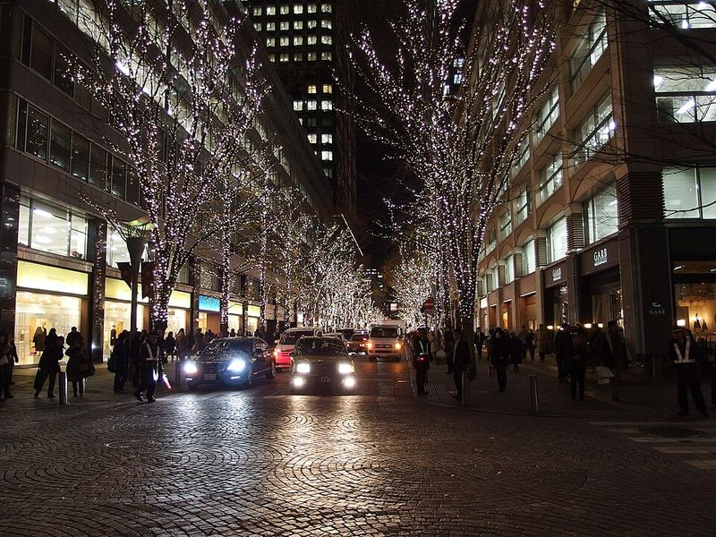
Winter Holiday Illuminations
Timed Schedule
-
08:30–11:00 🌅 Morning Balcony Onsen Soak at Mizunoto & Ride Down to Odawara ☀️ DaytimeEnjoy one last morning soak in your balcony hot-spring tub (plus free probiotic drinks in the lounge), check out by 10:00 AM, and take the Hakone Tozan Train or bus (~35 minutes) down to Odawara Station.📋 Required: Nothing to book—check out by 10:00 AM and use Day 2 of your Hakone Freepass for the train or bus ride to Odawara Station.
-
11:30–12:03 Tokaido Shinkansen Bullet Train: Odawara → Tokyo Station (33 min at 175 mph) ☀️ DaytimeExperience Japan's flagship N700S Shinkansen bullet train on a smooth 33-minute run straight into Tokyo Station.📋 Required: ⏳ Advance Booking Required: Opens Saturday, Oct 31 at 8:00 PM Chicago time (Nov 1 at 10:00 AM in Japan, 1 month out) on Smart EX. Book 2 Ordinary Car Reserved Seats (~¥3,800 per person, Car 12 Seats D & E) and either link them to your Apple Wallet Suica or scan the Smart EX QR code at the gate.
-
12:10–13:10 Tokyo Station Ramen Street & Gransta Food Hall Lunch ☀️ DaytimeChoose from 8 famous ramen counters plus wagyu bento, tempura, and sushi stalls right inside Tokyo Station (pick chicken, soy-sauce shoyu, seafood, or vegan ramen and skip pork tonkotsu), then ride the subway 15 minutes to Asakusa.📋 Required: Nothing to book (Ramen Street shops do not take reservations—just order on the English touchscreen vending machine at the shop entrance using Suica or cash, and show your No-Pork Chef Card).
-
13:30–14:30 ✅ Booked: Samurai & Ninja Museum Guided Tour in Asakusa (1:30 PM, $45) ☀️ DaytimeJoin your 60-minute interactive English tour with samurai armor and helmet try-on, replica katana sword photos, and real metal ninja star (shuriken) target practice.📋 Required: ✅ Already Booked on Viator (Booking 51440P80 for 1:30 PM, $45). Show your mobile Viator voucher at the museum front desk by 13:20.
-
15:00–16:15 🏨 ✅ Booked Check-In & 75-Min Break at lyf Shibuya Tokyo (8-Min Walk to Karts) ☕ Dedicated RestTake the direct Ginza Line back to Shibuya and check into 4-star lyf Shibuya Tokyo (4-3 Udagawacho, across from Shibuya PARCO), where your two large suitcases are waiting. Relax in your room and grab your warm jacket, gloves, and driving documents before walking 8 minutes to the go-kart shop.📋 Required: ✅ Already Booked on Priceline ($194 with tax). Present both physical passports at the front desk to check in and claim your stored suitcases, then put on closed-toe flat sneakers and pack your 3 driving documents.
-
16:30–18:00 ✅ Booked: Costumed Night Street Go-Karting (16:30 Check-In / 17:00 Drive) 🏮 Sunset & NightArrive at Street Kart Shibuya Annex (10-11 Maruyama-cho, 2nd floor) at 16:30 to pick out a warm character onesie and complete the safety briefing before your 1-hour guided night drive through Shibuya Crossing, Omotesando, and Harajuku.📋 Required: ✅ Tour Booked on Viator (Booking 57331P11) — ⚠️ Mandatory Documents & Gear for Both Drivers: Japanese police require you to present all 3 physical originals at 16:30 check-in (photos or digital copies are rejected): (1) your AAA 1949 Geneva International Driving Permit booklet ($20 at AAA before flying), (2) your physical U.S. Driver's License, and (3) your physical Passport, plus closed-toe flat shoes.
-
18:30–21:00 Charcoal-Grilled Unagi (Eel) Finale Dinner & Winter Holiday Illuminations 🏮 Sunset & NightCelebrate your final night in Tokyo with sweet-savory charcoal-grilled unagi (freshwater eel) over steamed rice, followed by an evening walk beneath the 1.2 million champagne-gold holiday lights along Marunouchi or Omotesando.📋 Required: Nothing (the holiday light boulevards are 100% free public walkways, and unagi restaurants are walk-in; show your No-Pork / No-Alcohol Chef Card when ordering).
Wed Dec 2
Shinjuku Gyoen Autumn Maples, Isetan Depachika Food Hall & Flight Home
📍 lyf Shibuya Tokyo → Shinjuku Gyoen & Isetan → Haneda Airport (16:50 Flight)
Pack up at lyf Shibuya, take an easy morning walk under the crimson autumn maples inside Shinjuku Gyoen National Garden at 09:15, pick up lunch and gourmet edible gifts inside Isetan's famous basement food hall, and head to Haneda Airport at 12:15 for your 16:50 flight home.
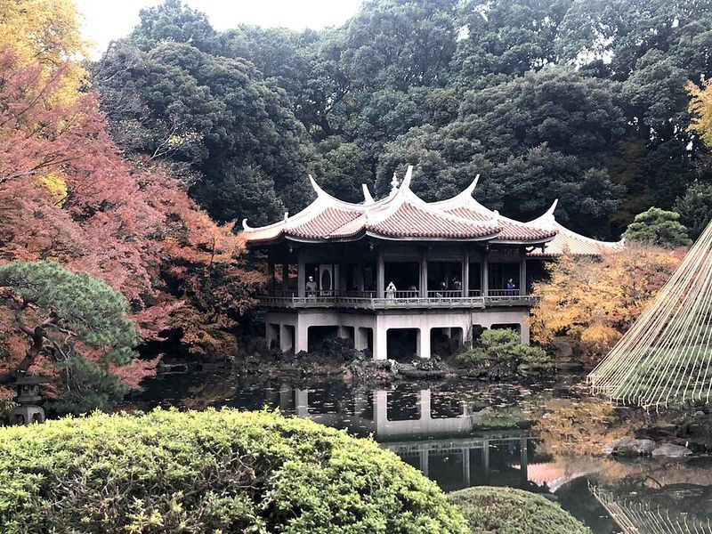
Shinjuku Gyoen Pavilion
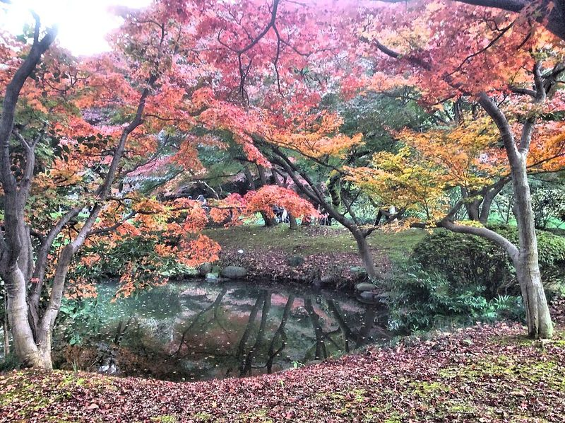
Shinjuku Gyoen Autumn Maples
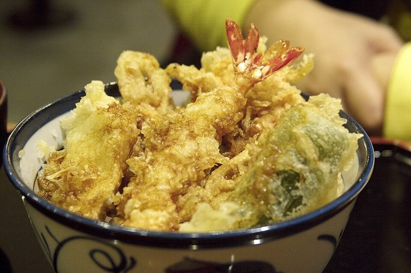
Tempura & Depachika Food Hall
Timed Schedule
-
07:30–09:00 🌅 Wake Up at lyf Shibuya Tokyo, Pack & Check Out ☀️ DaytimeLeave your bags at lyf Shibuya's 24-hour front desk (or bring them 7 minutes on the Yamanote Line to a coin locker at Shinjuku Station) before walking over to Shinjuku Gyoen.📋 Required: Nothing (express hotel check-out; tap Suica ¥170 for the train to Shinjuku, plus ¥700–¥900 with Suica if you use a station luggage locker).
-
09:15–10:15 Shinjuku Gyoen National Garden (Late-Autumn Maple Foliage) ☀️ DaytimeEnter right after the 09:00 AM opening for a peaceful 60-minute flat walk across traditional pond bridges, tea pavilions, and bright red late-November Japanese maples.📋 Required: No advance reservation required (timed entry tickets are only used during spring cherry-blossom season). Simply tap your Suica card directly on the turnstile gate (¥500 per adult; opens at 09:00 AM).
-
10:15–10:40 ☕ 25-Min Coffee & Pastry Break ☕ Dedicated RestStop at a café along the 5-minute walk between Shinjuku Gyoen and Isetan Department Store before the food hall doors open.📋 Required: Nothing (walk-in café).
-
10:40–11:50 Isetan Shinjuku 'Depachika' Underground Food Hall (Lunch & Souvenirs) 🏮 Sunset & NightBrowse Tokyo's most famous department-store basement food hall for freshly fried shrimp and vegetable tempura, wagyu beef croquettes (confirm no pork), fruit daifuku mochi, and beautifully boxed matcha cookies for your carry-on.📋 Required: Nothing for entry (free admission to the basement food hall; keep your physical passport handy if you spend ¥5,500+ on souvenir sweets and want the 10% tax-free refund).
-
12:15 Direct Train or Airport Limousine Bus to Haneda Terminal 3 (16:50 Flight) ☀️ DaytimeTake the 35-to-50-minute train or airport bus ride to Haneda Terminal 3, arriving around 13:15 with plenty of time for tax-free airport shopping before your 16:50 flight home.📋 Required: No advance booking required for the train (just tap Suica ¥670 via Shinagawa and the Keikyu Airport Line) and have your physical passports and boarding passes ready at Haneda Terminal 3.